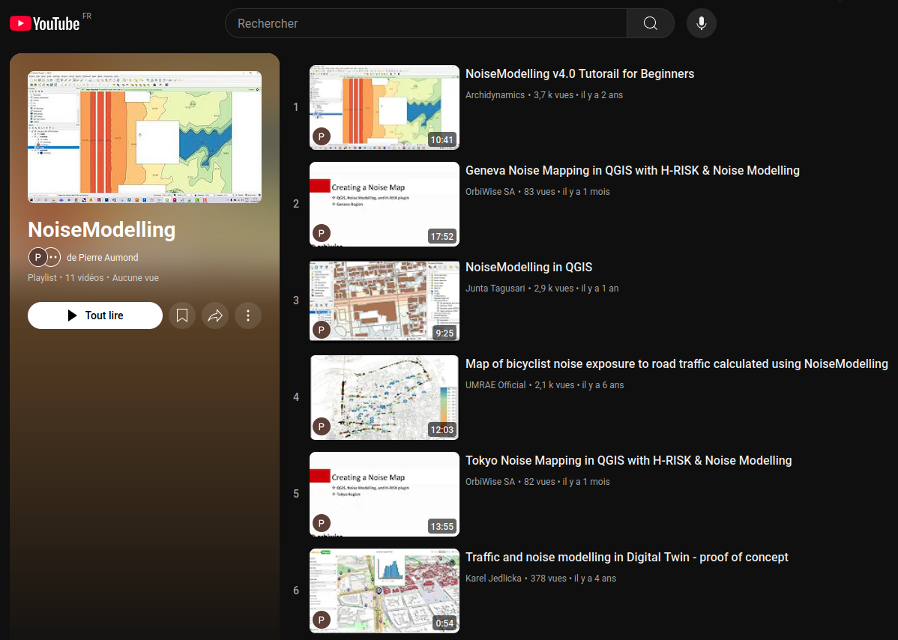

Community
How to contact?
for more information on NoiseModelling, visit the offical NoiseModelling website
to contribute to NoiseModelling source code, follow the “Get Started” page
- to contact the support / development team,
open an issue or a write a message (we prefer these two options)
send us an email at contact@noise-planet.org
Former and/or actual users
NoiseModelling benefits from a large community of users. Some of them are listed below:
Academic labs 🧪
UMRAE (Université Gustave Eiffel - Cerema) (🇫🇷)
KTH Royal Institue of Technology (Stockholm - 🇸🇪)
Utrecht University (🇳🇱)
Groupe WAVES (Ghent University - 🇧🇪)
Dipartimento di Ingegneria Civile/DICIV (Università Degli Studi di Salerno - 🇮🇹)
LETG - CNRS (Nantes, 🇫🇷)
LAboratoire de Géographie et d’Aménagement de Montpellier (LAGAM) - Université Paul Valéry (Montpellier, 🇫🇷)
Private company 🏭
UrbanMetrix (previously Archimethod SA) (🇨🇭)
OrbiWise (🇨🇭)
Neovya (🇫🇷)
Quiet Places Ltd (🇬🇧)
MobiLysis (🇨🇭)
Teaching 📚
ENSIM (Le Mans, 🇫🇷)
INSA Rennes (🇫🇷)
Master Acoustique Université du Mans (🇫🇷)
Other
Direction générale de la prévention des risques (DGPR) - (🇫🇷)
Corps grand-ducal d’incendie et de secours - CGDIS (G.D. Luxembourg 🇱🇺)
Ministerio para la Transición Ecológica y el Reto Demográfico (🇪🇸)
NoiseModelling Days
Every year, the NoiseModelling Days bring together users and contributors to discuss the tool.
To find out more, please visit this page (or this one for previous editions).
NoiseModelling in videos
Click on the thumbnail below to access the NoiseModelling YouTube playlist.
